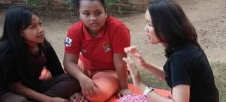

Lampung Community Health Project
Lampung, Indonesia
I participated in the community program together with my fellow medical seniors in Lampung. We spent around two weeks and collaborated with the hospital there to do community health activities. On the first few days we did observation of the hospital system in that region. Then we went to several places to do home visit with the hospital team.
We also handled a health check up for local citizens. Together with my senior, I led a health education campaign to local teenagers about reproductive health and the danger of unhealthy lifestyle to middle age citizens. On the last few days of our stay, we observed the local activities by engaging in their social activities.
Gallery
